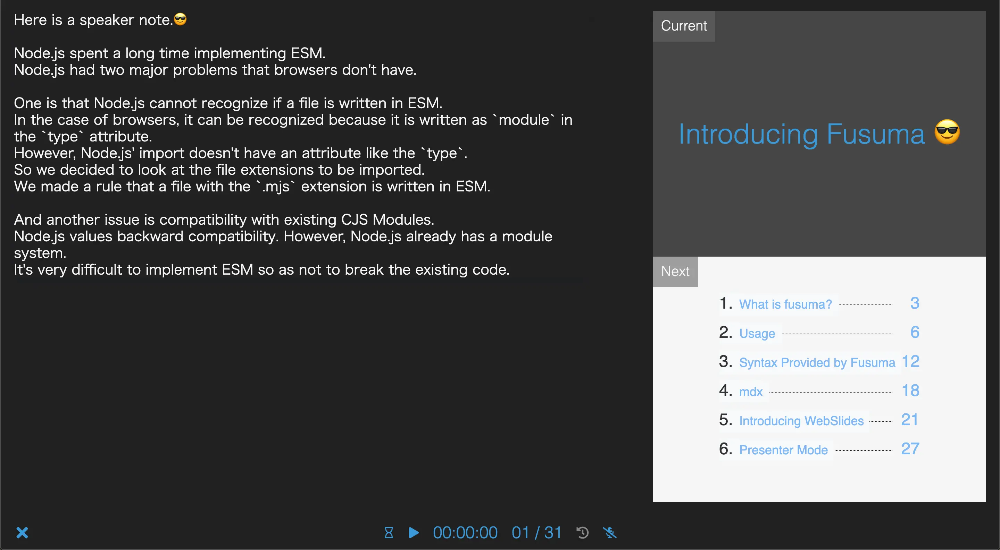
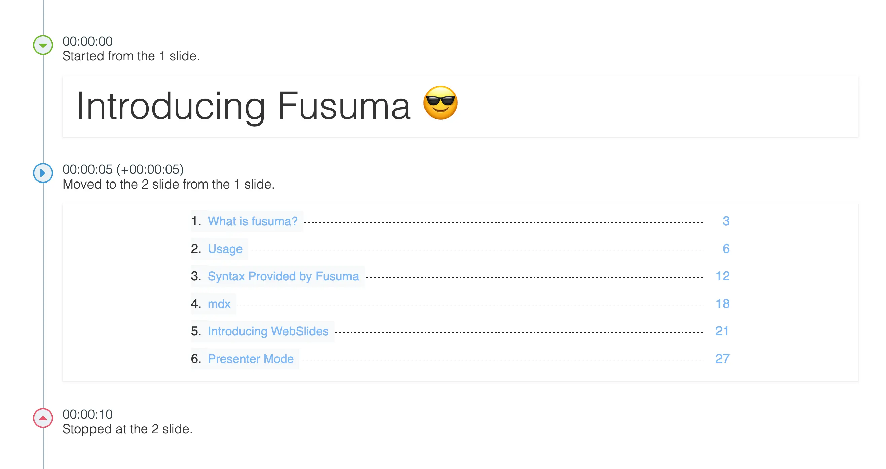

Introducing Fusuma 😎
What is Fusuma?
Features
Fusuma is a helper which makes slides using Markdown easily.
- makes cool slides by WebSlides
- supports development, production and deploy tasks
- you don't have to write webpack, Babel, Postcss settings, and etc...
- supports OGP, SNS, Fullscreen, and Presenter Mode
- supports Presentation API
- exports as PDF
just write in Markdown and execute with CLI😍
Procedure
$ npm i fusuma -D
$ mkdir slides && echo '# Hello😄' > slides/title.md # 🎉🎉🎉
# --- executable tasks ---
$ npx fusuma init # customize fusuma configuration
$ npx fusuma start # serve as NODE_ENV=development
$ npx fusuma build # build as NODE_ENV=production
$ npx fusuma live # start live mode
$ npx fusuma deploy # deploy to github pages
$ npx fusuma pdf # export as PDF from HTML
$ tree -a
.
└── slides
└── title.md
1 directory, 1 files
Usage
CLI
USAGE
fusuma <command> [options]
COMMANDS
init Create a configure file
start Start with webpack-dev-server
build Build with webpack
deploy Deploy to GitHub pages
pdf Export as PDF
live Start live mode
help <command> Display help for a specific command
Configuration File
Fusuma supports yaml and js, and npx fusuma init creates the configuration file.
# .fusumarc.yml
meta:
url:
title:
thumbnail:
description:
sns:
- twitter
slide:
loop: true
sidebar: true
targetBlank: true
showIndex: false
isVertical: false
math: false
chart: false
extends:
js:
css:
Directory Structure
.
├── .fusumarc.yml <-- optional
├── package.json
├── slides <-- Required
│ ├── 0-title.md
│ ├── 01-content.md
│ ├── 02-ecma
│ │ ├── 0-ecmascript.md
│ │ ├── 01-tc39.md
│ │ └── 02-history.md
│ └── 03-end.md
├── index.js <-- optional
└── style.css <-- optional
slides/ is required.
Tasks
// package.json
{
"scripts": {
"start": "fusuma start",
"build": "fusuma build",
"deploy": "npm run build && fusuma deploy",
"pdf": "fusuma pdf"
}
}
Syntax Highlighting
Fusuma uses prismjs.
Please set languages to .fusumarc.yml or .fusumarc.js if you want to use these.
# .fusumarc.yml
slide:
code:
languages:
- javascript
plugins:
- line-numbers
theme: twilight
Syntax Provided by Fusuma
Split Slides
## Hello
This is the first slide.
---
## ✌️
This is the second slide.
You can split slides within the same file by using --- syntax.
Add Classes
<!-- classes: title -->
## Hello
.title {
color: #3498db;
}
Also, you can use HTML because MarkDown accepts HTML.
Declare Section Title
<!-- sectionTitle: this is the second slide! -->
## ✌️
/* output with this class name */
.section-title {
color: #ff0;
background: #ccc;
}
Makes explicit declarations to create an agenda.
In addition, it is also added to sidebar's list.
Generate Agenda
## Contents
<!-- contents -->
Converts the page number and title name specified by sectionTitle into a list of list(ul/li).
Add Speaker Note
<!-- note
This is a speaker note!!
This sentence can be seen when using Presenter Mode.
😍
-->
## Hello!!
This is a note displayed on the host side in Presenter Mode.
Capturing Screen Contents
## Capturing Screen Contents
<!-- screen -->
Your screen can capture on the slide, but this feature can run only in Presenter Mode.
You can choose your local screen or application window or browser tab as output.
This feature will help live coding etc. See Screen Capture API for detail.
Output
The following image is a screenshot of the output slide.👇

mdx
JSX in Markdown
Hello from jsx!!
<!-- markdown (mdx) -->
import { Sample } from '../scripts/sample';
<Sample />
// sample.js
import React from 'react';
import styled, { keyframes } from 'styled-components';
const rotate = keyframes`
from { transform: rotate(0deg); }
to { transform: rotate(360deg); }
`;
const Rotate = styled.h2`
display: inline-block;
animation: ${rotate} 3s linear infinite;
`;
export const Sample = () => <Rotate>Hello from jsx!!</Rotate>;
Introducing WebSlides
Please see WebSlides's demo for details.
WebSlides provides some classes and tags.
Header and Footer
## Header and Footer
<header class="bg-blue">header!!</header>
<footer class="bg-green">footer!!</footer>
This slide is using header, footer and bg-* provided by WebSlides.
Grids
## Grids
<div class="grid">
<div class="column">
<h3>.column 1</h3>
</div>
<div class="column">
<h3>.column 2</h3>
</div>
<div class="column">
<h3>.column 3</h3>
</div>
</div>
.column 1
Incredibly versatile! Auto-fill and equal height. Flexbox is awesome.
.column 2
Incredibly versatile! Auto-fill and equal height. Flexbox is awesome. Just focus on your content. Have less. Do more.
.column 3
see the document https://webslides.tv/demos/components#slide=9
Alignments
1/9 left top
.slide-top and .content-left
## Alignments
<div class="content-left">
<h3>1/9 left top</h3>
<p><code>.slide-top and .content-left</code></p>
</div>
Animation
Just 5 basic animations: .fadeIn, .fadeInUp, .zoomIn, .slideInLeft, and .slideInRight.
WebSlides has many components not introduced this slides,
please refer to the document. 🙏
Presenter Mode
Recommend using this feature if you give a speech.
Fusuma is compatible with Presentation API,
but you can also use this mode if you use browsers which don't have Presentation API
because Fusuma can fallback to using localstorage.
Since iframes are used internally, recommend that you use this feature in your localhost.
Setup
- open Sidebar(click the bottom right button(三))
- click the PC monitor icon
- if you use Chrome, you can choose select cast device
- if you use a browser that does not support Presentation API, a new window will be created
Host Screen
Speaker Note
This page is written with the following Markdown.
<!-- note
This is a speaker note!!
This sentence can be seen when using Presenter Mode.
-->
Slide Timeline
When you start the timer, the timeline will be recorded.
By recording audio, you can also do time travel.
Drawing
When you write characters on the host side, it will be reflected on the client side in real time.

The End
Enjoy 😄